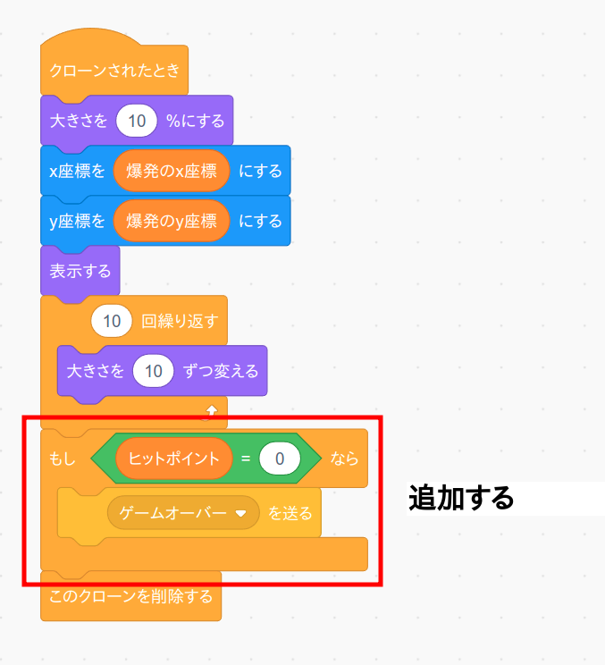

2. ゲームオーバーを表示して止める
次にヒットポイントが無くなったときにゲームオーバー画面を表示してゲームを終了させるプログラムを作ります。
まず爆発のコード画面を開き、プログラムを次の様に変更します
(注意) ゲームオーバーのコード画面ではなくて爆発のコード画面です。
「ゲームオーバーを送る」ブロックはイベントメニューの中の「ヒットポイント消すを送る」をセットしてから「新しいメッセージ」を選ぶと作ることが出来ます。
次にゲームオーバーのコード画面を開いてプログラムを作ります。
(注意) 爆発のコード画面ではなくてゲームオーバーのコード画面です。

「ゲームオーバー」イベントを受け取ったら単に文字列を表示してプログラムを停止するだけの内容です。
作成したら旗ボタンを押して動作確認して下さい。
(大事) 以上で項目8は終わりですので、動作確認をしたら一旦プログラムを保存しておきましょう。